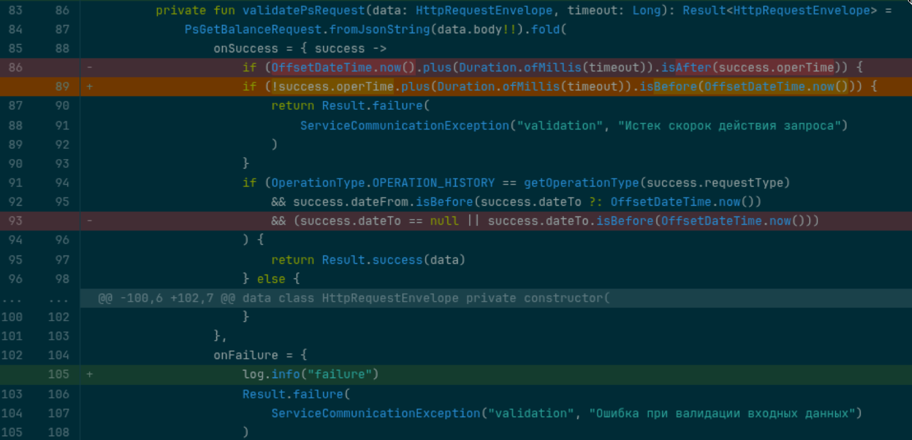
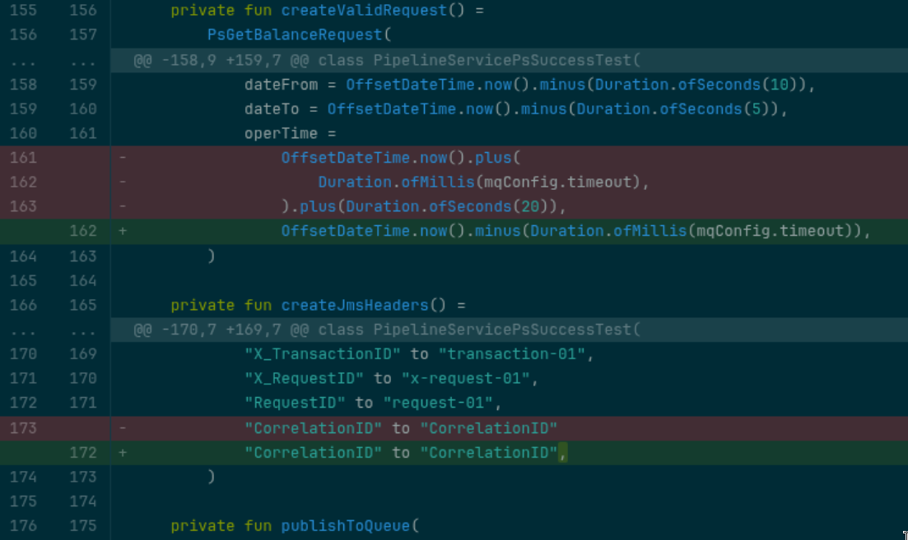
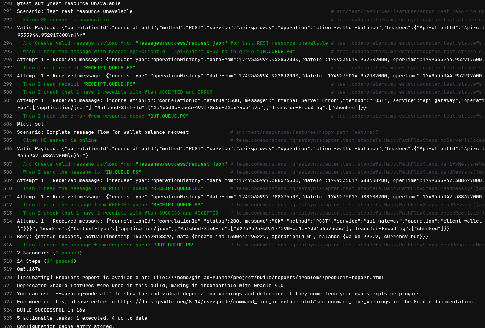
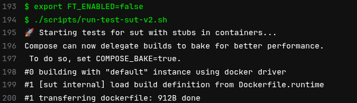
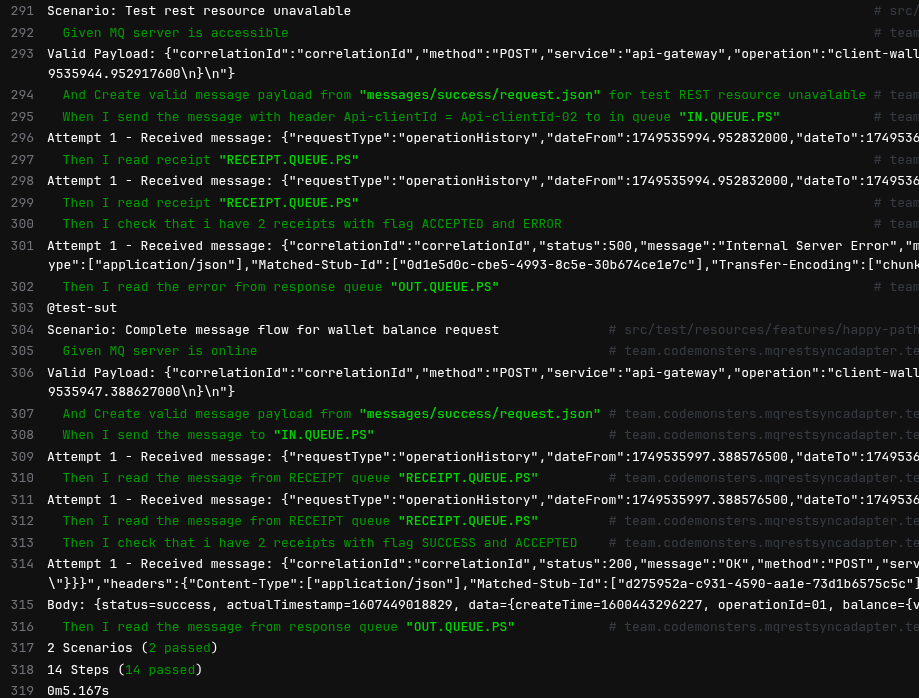

Симбиоз с машиной при разработке. Компонентные тесты
Киберпространство в срезе кодописи изменяется стремительно.
Голюцинация:
#gardener@core: закрываю глаза, обдумываю API компонента, проговариваю контекст, открываю глаза и вижу в git async api 3.0 спецификацию.
С машиной я взялся за старый учебный сервис.
Задача: вшить компонентные тесты в проект.
За час совместно с курсором настроил курсор. Вот такая интересная рекурсия. VS Code под мои потребности настроен. Для kotlin проекта пока не удобно, но для java работает хорошо. С учетом изменения стилистики работы и моего стремления упрощать - результат меня устраивает.
Два часа в потоке. Результат — чистые компонентные тесты без избыточных абстракций. Код читается как техническая проза, тестирует изолированно компонент, без шума. Очевидно, есть что улучшить, но результат уже многое обещает.
Настоящий джекпот — компонентные тесты выявили уязвимость в тестах на тест контейнерах (их принято называть на проектах Java - интеграционные тесты). Тесты на тестконтейнерах маскировали логические ошибки, подстраиваясь под баг как конформист со временем становится частью тонущего корабля, частью системы, которая кровоточит ошибками.
Новые компонентные тесты пробили эту иллюзию насквозь и подсветили изьян. Переписанный бизнес-процесс вскрыл и исправил ошибки, которые утаились в коде.
Старая логика работала неправильно (но тесты на тестконтейнерах не выявили этого), я исправляю ее коммит

Вот этот дефект в тестах на тестконтейнерах, коммит

Точка входа в Бизнес-процесс на старом коде в git.
С машиной накодил docker-compose для сборки docker-compose.yml
services:
# Сервис для сборки
builder:
build:
context: .
dockerfile: Dockerfile.build
args:
USER_ID: ${USER_ID}
GROUP_ID: ${GROUP_ID}
user: $USER_ID:$GROUP_ID
volumes:
- .:/app
- gradle-cache:/home/runner/.gradle
command: |
bash -c '
whoami
pwd
ls -la
ls -la /home/runner
./gradlew build
chmod -R 777 ./build
chown -R $(id -u):$(id -g) ./build
chmod -R 777 .gradle
chown -R $(id -u):$(id -g) .gradle
'
profiles:
- build
# Сервис для запуска приложения
app:
build:
context: .
dockerfile: Dockerfile.runtime
ports:
- "8080:8080"
environment:
- JAVA_OPTS=-Xms64m -Xmx256m
profiles:
- run
volumes:
gradle-cache:
services:
# IBM MQ Service
ibmmq:
image: docker.io/ibmcom/mq:9.2.4.0-r1-amd64
hostname: ibmmq # Важно для корректной работы MQ!
container_name: ibmmq
ports:
- "1414:1414"
- "9443:9443"
environment:
- LICENSE=accept
- MQ_QMGR_NAME=QM1
- MQ_DEV=true
- MQ_ADMIN_PASSWORD=passw0rd
- MQ_APP_PASSWORD=passw0rd
- MQ_CHANNEL=DEV.APP.SVRCONN # Канал по умолчанию
networks:
- test-network
volumes:
- ./scripts/mqsc/20-config.mqsc:/etc/mqm/20-config.mqsc:Z
healthcheck:
test: ["CMD-SHELL", "chkmqhealthy || exit 1"]
interval: 10s
timeout: 5s
retries: 5
# WireMock REST API Stub
wiremock:
image: docker.io/wiremock/wiremock:3.13.0
container_name: wiremock
hostname: wiremock
ports:
- "8080:8080"
volumes:
- ./wiremock:/home/wiremock
command:
- --global-response-templating
- --verbose
networks:
- test-network
healthcheck:
test: ["CMD", "curl", "-f", "http://localhost:8080/__admin/mappings"]
interval: 5s
timeout: 3s
retries: 5
sut:
build:
context: ../
dockerfile: Dockerfile.runtime
container_name: sut
environment:
- spring.profiles.active=dev
- ibm.mq.queueManager=QM1
- ibm.mq.channel=DEV.APP.SVRCONN
- ibm.mq.connName=ibmmq(1414)
- ibm.mq.user=app
- ibm.mq.password=passw0rd
- rest.configs.api-gateway.url=http://wiremock:8080
- rest.configs.api-gateway.basic-auth.user=client
- rest.configs.api-gateway.basic-auth.password=password
- features.toggles.wallet-balance-workflow.enabled=$FT_ENABLED
ports:
- "8081:8080"
networks:
- test-network
healthcheck:
test: "curl --fail --silent localhost:8081/actuator/health | grep UP || exit 1"
interval: 20s
timeout: 5s
retries: 5
start_period: 40s
depends_on:
ibmmq:
condition: service_healthy
wiremock:
condition: service_healthy
# Тестовый контейнер (если запускаете тесты как отдельный сервис)
test-runner:
image: docker.io/codemonstersteam/jdk21-deps:0.0.4
container_name: test-runner
environment:
- MQ_HOST=ibmmq
- MQ_PORT=1414
- MQ_QMGR_NAME=QM1
- MQ_CHANNEL=DEV.APP.SVRCONN
- MQ_USER=app
- MQ_PASSWORD=passw0rd
- WIREMOCK_HOST=wiremock
- WIREMOCK_PORT=8080
volumes:
- ./:/home/gitlab-runner/project:Z
working_dir: /home/gitlab-runner/project
command: |
bash -c '
echo "log of test-runner"
id
ls -la
echo "pwd > $(pwd)"
./gradlew cucumber -Dcucumber.filter.tags="@test-sut"
chmod -R 777 ./build
chmod -R 777 .gradle
'
networks:
- test-network
depends_on:
ibmmq:
condition: service_healthy
wiremock:
condition: service_healthy
#sut:
#condition: service_healthy
# MQ-REST-Sync-Adapter Service
networks:
test-network:
driver: bridge
stages:
- test-api-specification
- unit-tests
- component-tests
test-api-specification:
image:
name: asyncapi/cli:3.1.1
entrypoint: ['']
stage: test-api-specification
script:
- asyncapi validate ./api-specification/asyncapi.yml
unit-tests:
tags:
- compose
stage: unit-tests
variables:
DOCKER_HOST: "unix:///var/run/docker.sock"
needs:
- test-api-specification
script:
- export USER_ID=$(id -u)
- export GROUP_ID=$(id -g)
- docker compose --profile build up
- ls -la build/
artifacts:
paths:
- build/
expire_in: 5 day
component-tests:
tags:
- compose
stage: component-tests
variables:
DOCKER_HOST: "unix:///var/run/docker.sock"
needs:
- unit-tests
script:
- export FT_ENABLED=true
- ls -la build/
- cd component-tests
- ./scripts/run-test-sut-v2.sh
- export FT_ENABLED=false
- ./scripts/run-test-sut-v2.sh
artifacts:
paths:
- component-tests/build/
expire_in: 5 day
Больше времени ушло на администрирование и полировку результатов тестов, чем на саму разработку.
Следующий уровень
Что ждет меня дальше?
Интеграция контрактных тестов в конвейер, сервис-поставщик на Go, связка пайплайнов через Pact.
Финальная цель — непрерывная поставка в Kubernetes двух сервисов, работающих стабильно в изоляции и в как следствие стабильно работающие в связке в Kubernetes (на PROD полигоне).
Вердикт
Cимбиоз с ИИ уже сейчас ощущается как качественный скачок. Разработка стала не просто продуктивнее — она стала увлекательнее.
Заключение: лог компонентных тестов в гитлаб раннере


